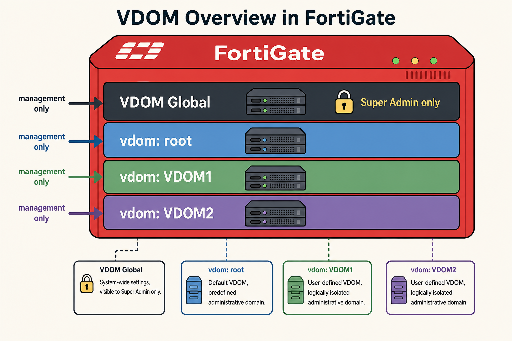
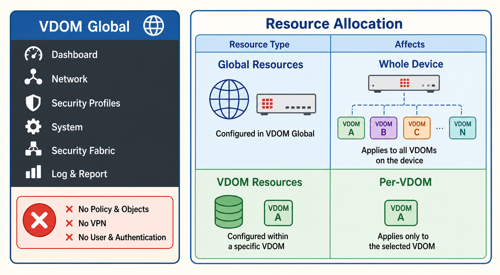
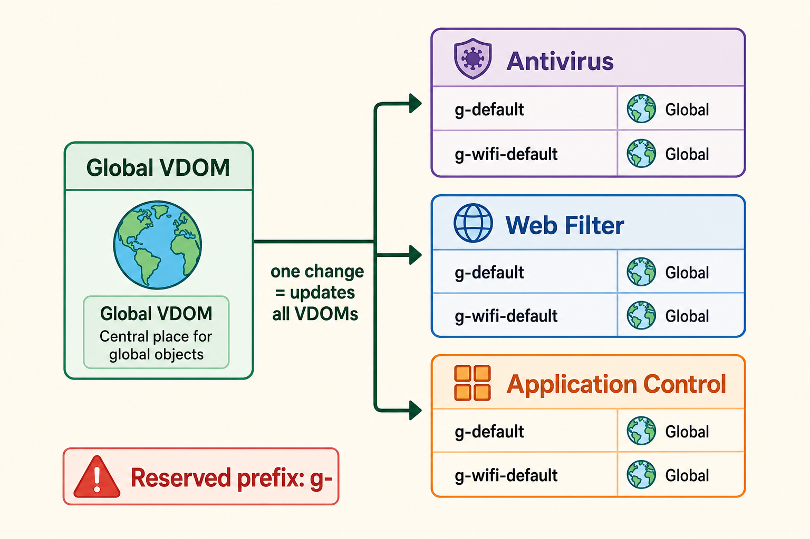
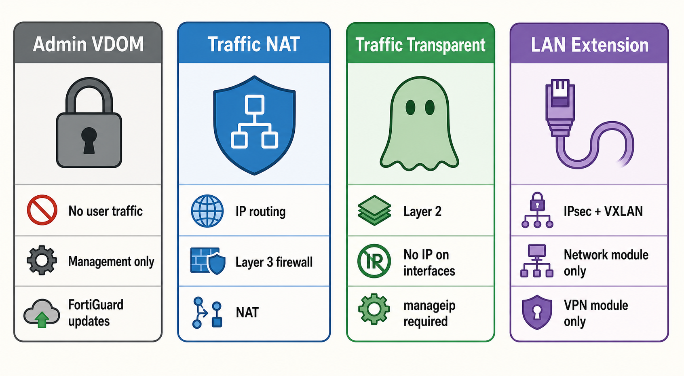
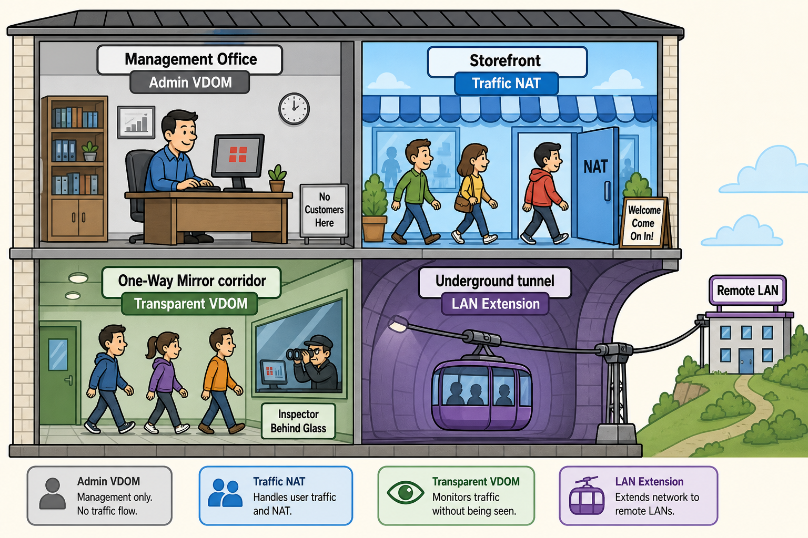
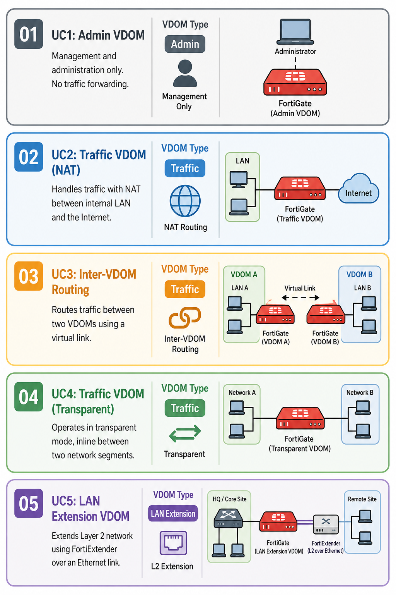

Understand VDOM types, the Global VDOM hierarchy, global objects, resource limits, and the five VDOM use cases — the most heavily-tested multi-tenant topic in EF-NSE7.
One FortiGate, many independent firewalls — VDOMs are how enterprises scale security without multiplying hardware.
This subtopic covers enabling VDOMs, the Admin/Traffic/LAN Extension types, Global VDOM settings, global objects, and the five deployment use cases.
💭THINK FIRST · VDOM OVERVIEW
VDOMs partition a single FortiGate into multiple independent virtual firewalls, each with its own security policies, interfaces, and routing tables. Enabling multi-VDOM mode creates two special VDOMs that can never be deleted.
When you enable multi-VDOM mode on FortiGate, what two VDOMs are automatically created — and why can neither be deleted?
Most FortiGate models support up to 10 VDOMs by default. What CLI command tells you the exact maximum your device supports, and how do you increase that limit?
Q1 — MODEL ANSWER
Enabling multi-VDOM creates the Global VDOM and the root VDOM. Neither can be deleted because they are foundational: Global VDOM manages device-wide settings (firmware, DNS, interfaces, logging) and only Super Admin users can access it; root VDOM is the default traffic VDOM and must exist as a baseline. Deleting either would break the VDOM architecture entirely.
Q2 — MODEL ANSWER
Use get system status and look for "Max number of virtual domains," or run the filtered command get sys status | grep "Max number of virtual domains". To increase the limit beyond 10, you must purchase and apply an additional VDOM license from Fortinet.
SECTION 01
VDOMs Overview — Virtualized Security

images/s1-vdom-overview.png
Flat colorful illustration: a FortiGate device (red box at top) partitioned into four stacked horizontal layers — "VDOM Global" (dark, top), "vdom: root" (blue), "vdom: VDOM1" (green), "vdom: VDOM2" (purple). Each layer has a small server/rack icon. Arrows labeled "management only" point to Global. A lock icon on Global reads "Super Admin only". Pastel palette, bold outlines, no shadows.
A single FortiGate partitioned into multiple VDOMs — each an independent virtual firewall with its own policies and routing.
A VDOM (Virtual Domain) partitions a single FortiGate device into multiple independent virtual firewalls, each with its own security configuration, interfaces, routing table, firewall policies, and VPN settings. VDOMs enable multi-tenancy, network segmentation, and administrative separation on a single physical device.
To enable VDOMs, use the CLI command config system global / set vdom-mode multi-vdom / end. This creates the Global VDOM and the root VDOM — two VDOMs that cannot be deleted. Only Super Admin users have access to the Global VDOM.
FortiGate CLI — Enable Multi-VDOM
config system global
set vdom-mode multi-vdom
end
# Check the VDOM limit on your device:
get system status
get sys status | grep "Max number of virtual domains"
Most FortiGate models support up to 10 VDOMs by default. Additional VDOMs require a license. To delete a VDOM, you must first remove all references: delete policies, remove firewall objects, and reassign all interfaces that belong to that VDOM back to root.
Exam tip: To delete a VDOM you must first remove all policies, firewall objects, and interfaces assigned to it. You cannot delete the Global or root VDOMs. Switching between VDOMs in the GUI uses the VDOM selector at the top right — only Super Admin sees the Global VDOM.
🧠
MENTAL NOTE
Enable VDOMs: set vdom-mode multi-vdom. Creates Global + root (undeletable). Default max = 10 VDOMs; check with get sys status | grep "Max number". Super Admin only accesses Global VDOM. Delete VDOM = remove policies, objects, interfaces first.
ASK A QUESTION
ADD A NOTE
💭THINK FIRST · VDOM GLOBAL
VDOM Global controls device-wide settings. Because changes here affect every VDOM on the device, three modules that are specific to traffic processing are explicitly excluded from Global — you can't configure them there at all.
Which three FortiGate modules are NOT available in VDOM Global, and why does it make sense to exclude them from a device-wide management context?
What is the difference between "global resources" and "VDOM resources" in the Global VDOM resource allocation screen?
Q1 — MODEL ANSWER
Policy & Objects, VPN, and User & Authentication are unavailable in VDOM Global. These modules handle user traffic and are inherently per-VDOM — you define policies and VPNs separately inside each traffic VDOM. Placing them in Global would break the isolation model where each VDOM has independent security policies.
Q2 — MODEL ANSWER
Global resources affect the entire FortiGate device (e.g., total active sessions, total firewall policies) and are edited under VDOM Global > System > Global Resources. VDOM resources are allocated to a specific VDOM (e.g., maximum firewall policies for VDOM1) and are edited under VDOM Global > System > VDOM > Edit VDOM. The override maximum must always be greater than or equal to current usage.
SECTION 02
VDOM Global — Device-Wide Settings

images/s2-vdom-global.png
Flat colorful illustration: two-panel diagram. Left panel: VDOM Global sidebar menu (dark background) showing Dashboard, Network, Security Profiles, System, Security Fabric, Log & Report — with a red "X" callout box listing "No Policy & Objects, No VPN, No User & Authentication". Right panel: Resource allocation table with two rows — "Global Resources" (affects whole device, blue) and "VDOM Resources" (per-VDOM, green). Bold outlines, pastel colors, no shadows.
VDOM Global lacks three traffic modules — Policy & Objects, VPN, and User & Authentication are per-VDOM only.
Changes made in VDOM Global affect the entire FortiGate device. This includes interface configurations, firmware management, DNS settings, some logging, and sandboxing. Only Super Admin administrators can access and modify VDOM Global settings.
The following modules are unavailable in VDOM Global because they are inherently per-VDOM:
Policy & Objects — firewall policies are defined per-VDOM
VPN — VPN tunnels belong to individual VDOMs
User & Authentication — user accounts and authentication are per-VDOM
Resource allocation is split into two levels:
Global resources — affect the entire device; edit at VDOM Global > System > Global Resources
VDOM resources — allocated to each specific VDOM; edit at VDOM Global > System > VDOM > Edit VDOM
Exam gotcha: When setting the "Override Maximum" for a VDOM resource, it must always be greater than or equal to the current usage. Setting it below current usage will fail. This applies to resources like firewall policies and firewall addresses per VDOM.
🧠
MENTAL NOTE
VDOM Global missing modules: Policy & Objects, VPN, User & Authentication (all per-VDOM). Global resources = entire device. VDOM resources = per-VDOM allocation. Override maximum must be ≥ current usage.
ASK A QUESTION
ADD A NOTE
💭THINK FIRST · GLOBAL OBJECTS
Global objects provide consistent security profiles (UTM) across all VDOMs simultaneously. They use a reserved naming prefix to ensure they never collide with per-VDOM objects — but this prefix creates a conflict when using FortiManager.
What naming prefix identifies a global object, and why must you avoid using this prefix for objects in individual VDOMs?
When should you switch from FortiGate global objects to FortiManager global objects — and what does this enable?
Q1 — MODEL ANSWER
Global objects use the prefix g- (e.g., g-default, g-wifi-default). These values are reserved — if you name a per-VDOM object with the g- prefix, it will conflict with the global object namespace and cause naming collisions. Fortinet explicitly warns against using this nomenclature in individual VDOMs or FortiManager ADOMs.
Q2 — MODEL ANSWER
When you import FortiGate configurations into FortiManager, you should switch from FortiGate global objects to FortiManager global objects. This enables improved synchronization between FortiManager and FortiGate — FortiManager's global objects take precedence and are distributed centrally, ensuring consistent profiles across managed devices without duplication.
SECTION 03
Global Objects — Consistent UTM Across VDOMs

images/s3-global-objects.png
Flat colorful illustration: three stacked profile cards — Antivirus, Web Filter, Application Control — each showing two rows: "g-default" and "g-wifi-default" with a "Global" scope badge (earth/globe icon). An arrow from the Global VDOM points to all three cards simultaneously, labeled "one change = updates all VDOMs". A warning badge reads "Reserved prefix: g-". Pastel palette, bold outlines, no shadows.
Global objects prefixed with "g-" propagate automatically to every VDOM on the device.
Global objects ensure consistent UTM (Unified Threat Management) security profiles across all VDOMs simultaneously. When you modify a global object, it automatically updates the same profile in every VDOM — eliminating the need to manually update each VDOM individually.
The following UTM profile types can be created as global objects:
Antivirus
Web Filters
Application Control
Intrusion Prevention
File Filter
Data Loss Prevention
Virtual Patching
Global objects are identified by the reserved prefix g-. For example, g-default (Antivirus), g-wifi-default (Application Control). Never use the g- prefix for per-VDOM or FortiManager ADOM objects — it is reserved and will cause conflicts.
FortiManager integration tip: When you import FortiGate configurations into FortiManager, switch from FortiGate global objects to FortiManager global objects. This enables proper synchronization and centralized distribution of security profiles across all managed devices.
🧠
MENTAL NOTE
Global objects prefix = g- (reserved). 7 types: AV, Web Filter, App Control, IPS, File Filter, DLP, Virtual Patching. Modify one = updates all VDOMs. Switch to FortiManager global objects when managing via FortiManager — do not mix the two.
ASK A QUESTION
ADD A NOTE
💭THINK FIRST · VDOM TYPES
FortiGate supports three VDOM types, and the distinction matters for what modules are available and how traffic flows. Traffic VDOMs have two operational modes — NAT and transparent — that serve fundamentally different use cases even though both handle traffic.
A transparent mode VDOM has no IP addresses on its interfaces — how does an administrator manage it remotely, and what CLI attribute is mandatory for this to work?
What is the only VDOM type that cannot pass user traffic, and what is its primary purpose?
Q1 — MODEL ANSWER
Transparent mode VDOMs require a management IP address (manageip) configured separately — because interfaces have no IP, you need a dedicated management IP for HTTPS/SSH access. The CLI attribute is set manageip under config system settings. Without it, FortiGate returns an error about a failed node check for 'manageip'.
Q2 — MODEL ANSWER
The Admin VDOM cannot pass user traffic — it is dedicated to FortiGate management and FortiGuard updates only. Its available modules are Dashboard, Network, System, Security Fabric, and Log & Report. Changing a traffic VDOM to admin type will prompt a warning that policies, security profiles, WiFi/Switch, User & Authentication, and dashboards will be deleted.
SECTION 04
Types of VDOMs — Admin, Traffic, LAN Extension

images/s4-vdom-types.png
Flat colorful illustration: four side-by-side cards on a light background. Card 1 "Admin VDOM" (grey, lock icon) — "No user traffic, Management only, FortiGuard updates". Card 2 "Traffic NAT" (blue, shield icon) — "IP routing, Layer 3 firewall, NAT". Card 3 "Traffic Transparent" (green, ghost icon) — "Layer 2, No IP on interfaces, manageip required". Card 4 "LAN Extension" (purple, cable icon) — "IPsec + VXLAN, Network and VPN modules only". Bold outlines, pastel colors, no shadows.
Four VDOM types serving distinct roles — Admin for management, Traffic (NAT/Transparent) for user traffic, and LAN Extension for network expansion.
FortiGate supports three primary VDOM types, with Traffic VDOMs offering two operating modes:
VDOM Type
Handles Traffic?
Operation Mode
Key Use
Admin
No
N/A
Management, FortiGuard updates
Traffic — NAT
Yes
Layer 3 (NAT/routing)
Standard firewall — ISFW, NGFW, DCFW, DEFW
Traffic — Transparent
Yes
Layer 2 (inline, no IP)
UTM without routing — any layer 2 network
LAN Extension
Yes
IPsec + VXLAN
Remote LAN expansion via FortiExtender
FortiGate CLI — Create VDOM Types
# Admin VDOM
config vdom
edit "admin-vdom"
config system settings
set vdom-type admin
end
# Traffic VDOM — NAT mode
config vdom
edit "traffic-vdom"
config system settings
set vdom-type traffic
set opmode nat
end
# Traffic VDOM — Transparent mode
config vdom
edit "transparent-vdom"
config system settings
set vdom-type traffic
set opmode transparent
set manageip 172.16.16.1/255.255.255.0
end
# LAN Extension VDOM
config vdom
edit "lan-ext-vdom"
config system settings
set vdom-type lan-extension
end
Transparent mode VDOMs operate invisibly at the IP layer. All interfaces share the same broadcast domain, and interfaces have no IP addresses — only a management IP for administrative access. Use the forward-domain command if you need to subdivide the VDOM into multiple broadcast domains by VLAN ID.
The LAN Extension VDOM is established between a FortiGate connector (or FortiExtender) and a FortiGate access controller using IPsec and VXLAN. It has only Network and VPN modules available.
Exam tip: Transparent mode VDOM must have a manageip configured — without it, you'll see an error: "failed node check object for 'manageip'". Admin VDOMs support only 1 per FortiGate; Traffic and LAN Extension support up to 10 by default (more with licensing).
Analogy
VDOM types are like different roles in a company building — each occupies the same physical space but serves a completely different function.
Admin VDOM — the building management office: handles maintenance and utilities, never serves customers directly
Traffic NAT VDOM — the main storefront: customers enter, transactions are processed, addresses are translated at the door (NAT)
Traffic Transparent VDOM — a one-way mirror installed mid-corridor: inspects everything passing through but is invisible to anyone walking by — no address, no presence at Layer 3
LAN Extension VDOM — an underground tunnel connecting a satellite office: carries LAN traffic securely over distance using a specialized encrypted pathway

📷 images/a1-vdom-building-roles.png — add this image to the folder
Cartoon illustration in pastel style: a cross-section of a building with four labeled sections. Top-left: "Management Office" (grey, labeled "Admin VDOM") — a person at a desk with no customers. Top-right: "Storefront" (blue, labeled "Traffic NAT") — customers passing through, a door labeled "NAT". Bottom-left: "One-Way Mirror corridor" (green, labeled "Transparent VDOM") — people walking through unaware, inspector watching behind glass. Bottom-right: "Underground tunnel" (purple, labeled "LAN Extension") — cable car connecting to a satellite office labeled "Remote LAN". Bold outlines, no shadows, short text labels, educational infographic feel.
🧠
MENTAL NOTE
Admin VDOM: 1 max, no user traffic, set vdom-type admin. Traffic NAT: Layer 3, standard firewall. Traffic Transparent: Layer 2, no IPs on interfaces, must set manageip. LAN Extension: IPsec+VXLAN, Network+VPN modules only. Traffic + LAN Extension = 10 default, expandable with license.
ASK A QUESTION
ADD A NOTE
💭THINK FIRST · VDOM USE CASES
The five VDOM use cases map VDOM types to real-world deployment scenarios. A critical detail: the management VDOM determines which VDOM handles FortiGuard updates and license validation — if that VDOM loses internet access, all VDOMs may experience issues.
By default, the root VDOM is the management VDOM. What happens if the management VDOM cannot reach a FortiGuard Distribution Server (FDS)?
In Use Case 3 (Internet Access via Inter-VDOM Routing), why would VDOM1 need an inter-VDOM link rather than a direct internet connection?
Q1 — MODEL ANSWER
If the management VDOM cannot reach the FortiGuard Distribution Server (FDS) in a closed network, the firewall and all VDOMs may experience issues with FortiGuard databases — signature updates, license validation, and web filtering category lookups will fail. This can lead to firewall malfunctions. You can change the management VDOM using "Switch Management" in the Global VDOM > System > VDOM screen.
Q2 — MODEL ANSWER
VDOM1 uses an inter-VDOM link because it has no direct internet-facing interface — only the root VDOM has an internet connection. The inter-VDOM link creates a virtual connection between root and VDOM1, allowing VDOM1 to route internet-bound traffic through root's internet interface. This is more secure than giving VDOM1 a direct ISP connection, since all internet traffic is controlled through one VDOM.
SECTION 05
VDOM Use Cases — Five Deployment Scenarios

images/s5-vdom-use-cases.png
Flat colorful illustration: five horizontal scenario cards stacked vertically. Each card has a scenario number, name, VDOM type badge, and a small network topology icon. UC1: Admin VDOM (grey, management-only). UC2: Traffic NAT (blue, LAN+Internet). UC3: Inter-VDOM routing (two VDOMs connected by a virtual link arrow). UC4: Traffic Transparent (green, inline between two network segments). UC5: LAN Extension (purple, FortiExtender cable). Pastel palette, bold outlines, no shadows.
Five use cases map VDOM types to real-world enterprise deployment patterns.
The five VDOM use cases show how each VDOM type is applied in real enterprise deployments:
#
Use Case
VDOM Type
Key Characteristic
1
Admin VDOM
Admin
Management only; FortiGuard downloads; no user traffic; 5 modules only
2
Traffic VDOM, NAT Mode
Traffic NAT
Acts as regular firewall; management VDOM for FortiGuard; can be changed
3
Internet via Inter-VDOM Routing
Traffic NAT
VDOM1 has no internet; accesses it through root VDOM via inter-VDOM link
4
Traffic VDOM, Transparent Mode
Traffic Transparent
Invisible at IP layer; UTM scanning without routing; L2 only; manageip required
5
LAN Extension VDOM
LAN Extension
FortiExtender connector + FortiGate controller; IPsec+VXLAN; Network+VPN only
Management VDOM is a critical concept: the management VDOM handles FortiGuard updates and license validation. By default, the root VDOM is the management VDOM. You can change it by clicking Switch Management in Global VDOM > System > VDOM. A red dot in the VDOM list indicates the current management VDOM.
Exam tip: The management VDOM must have internet connectivity. If it's in a closed network without FDS access, all VDOMs may fail to update signatures or validate licenses — causing potential firewall malfunctions. Always ensure the management VDOM has a reliable internet path or internal FDS.
🧠
MENTAL NOTE
5 VDOM use cases: Admin (management only), Traffic NAT (standard firewall), Inter-VDOM routing (shared internet via root), Traffic Transparent (L2 inline UTM), LAN Extension (FortiExtender via IPsec+VXLAN). Management VDOM = FortiGuard updates; default = root; red dot = current management VDOM.